Kreiranje segmentatora za tabele
Kreiranje novog segmentatora
Nakon što kreirate novu formatiranu tabelu u Spreadsheet Editor-u ili pivot tabelu, možete kreirati segmentatore za brzo filtriranje podataka. Da biste to uradili,
- izaberite najmanje jednu ćeliju unutar tabele pomoću miša i kliknite na ikonu Table settings sa desne strane.
- kliknite na opciju Insert slicer na kartici Table settings na desnoj bočnoj traci. Alternativno, možete preći na karticu Insert na gornjoj alatnoj traci i kliknuti na dugme Slicer. Otvoriće se prozor Insert Slicers:
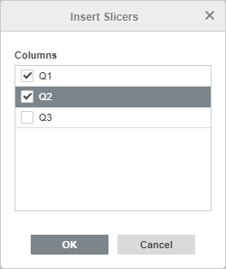
- označite potrebne kolone u prozoru Insert Slicers.
- kliknite na dugme OK.
Segmentator će biti dodat za svaku izabranu kolonu. Ako dodate više segmentatora, oni će se preklapati. Nakon što je segmentator dodat, možete promeniti njegovu veličinu i poziciju, kao i njegova podešavanja.
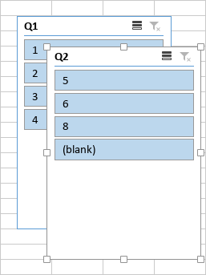
Segmentator sadrži dugmad na koja možete kliknuti da biste filtrirali tabelu. Dugmad koja odgovaraju praznim ćelijama označena su oznakom (blank). Kada kliknete dugme segmentatora, ostala dugmad će biti poništena, a odgovarajuća kolona u izvornoj tabeli biće filtrirana tako da prikazuje samo izabranu stavku:
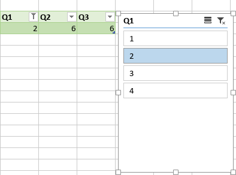
Ako ste dodali više segmentatora, promene napravljene u jednom segmentatoru mogu uticati na stavke u drugom segmentatoru. Kada se jedan ili više filtera primeni na segmentator, stavke bez podataka mogu se pojaviti u drugom segmentatoru (svetlije boje):
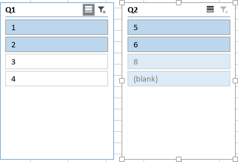
Način prikaza stavki bez podataka možete podesiti u podešavanjima segmentatora.
Da biste izabrali više dugmadi segmentatora, koristite ikonu Multi-Select u gornjem desnom uglu segmentatora ili pritisnite Alt+S. Izaberite potrebna dugmad segmentatora klikom na njih jedno po jedno.
Da biste obrisali filter segmentatora, koristite ikonu Clear Filter u gornjem desnom uglu segmentatora ili pritisnite Alt+C.
Uređivanje segmentatora
Neka podešavanja segmentatora mogu se promeniti pomoću kartice Slicer settings na desnoj bočnoj traci, koja će se otvoriti kada izaberete segmentator pomoću miša.
Možete sakriti ili prikazati ovu karticu klikom na ikonu sa desne strane.
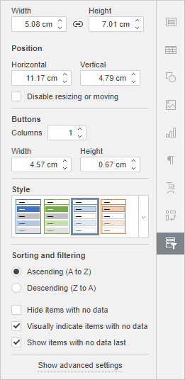
Promena veličine i pozicije segmentatora
Opcije Width i Height omogućavaju promenu širine i/ili visine segmentatora. Ako je dugme Constant proportions aktivirano (u tom slučaju izgleda ovako ), širina i visina će se menjati zajedno uz zadržavanje originalnog odnosa stranica segmentatora.
Odeljak Position omogućava promenu Horizontal i/ili Vertical pozicije segmentatora.
Opcija Disable resizing or moving omogućava da sprečite pomeranje ili promenu veličine segmentatora. Kada je ova opcija označena, opcije Width, Height, Position i Buttons su onemogućene.
Promena rasporeda i stila segmentatora
Odeljak Buttons omogućava da odredite potreban broj Columns i da podesite Width i Height dugmadi. Podrazumevano, segmentator sadrži jednu kolonu. Ako vaše stavke sadrže kratak tekst, možete promeniti broj kolona na 2 ili više:
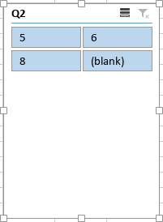
Ako povećate širinu dugmeta, širina segmentatora će se proporcionalno promeniti. Ako povećate visinu dugmeta, na segmentator će biti dodat klizač:
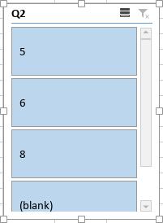
Odeljak Style omogućava izbor jednog od unapred definisanih stilova segmentatora.
Primena parametara sortiranja i filtriranja
- Ascending (A to Z) koristi se za sortiranje podataka rastućim redosledom – od A do Z abecedno ili od najmanjeg ka najvećem broju za numeričke podatke.
- Descending (Z to A) koristi se za sortiranje podataka opadajućim redosledom – od Z do A abecedno ili od najvećeg ka najmanjem broju za numeričke podatke.
Opcija Hide items with no data omogućava sakrivanje stavki bez podataka iz segmentatora. Kada je ova opcija označena, opcije Visually indicate items with no data i Show items with no data last su onemogućene.
Kada opcija Hide items with no data nije označena, možete koristiti sledeće opcije:
- Opcija Visually indicate items with no data omogućava prikaz stavki bez podataka uz drugačije formatiranje (svetlija boja).
- Opcija Show items with no data last omogućava prikaz stavki bez podataka na kraju liste.
Podešavanje naprednih podešavanja segmentatora
Da biste promenili napredna svojstva segmentatora, koristite link Show advanced settings na desnoj bočnoj traci. Otvoriće se prozor „Slicer - Advanced Settings“:
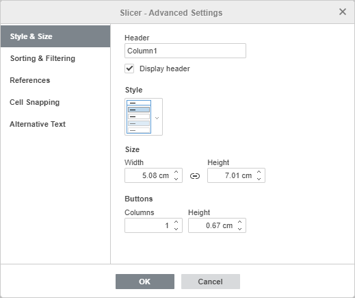
Kartica Style & Size sadrži sledeće parametre:
- Opcija Header omogućava promenu zaglavlja segmentatora. Poništite opciju Display header ako ne želite da se zaglavlje segmentatora prikazuje.
- Odeljak Style omogućava izbor jednog od unapred definisanih stilova segmentatora.
- Opcije Width i Height omogućavaju promenu širine i/ili visine segmentatora. Ako je dugme Constant proportions aktivirano (u tom slučaju izgleda ovako ), širina i visina će se menjati zajedno uz zadržavanje originalnog odnosa stranica segmentatora.
- Odeljak Buttons omogućava da odredite potreban broj Columns i da podesite Height dugmadi.
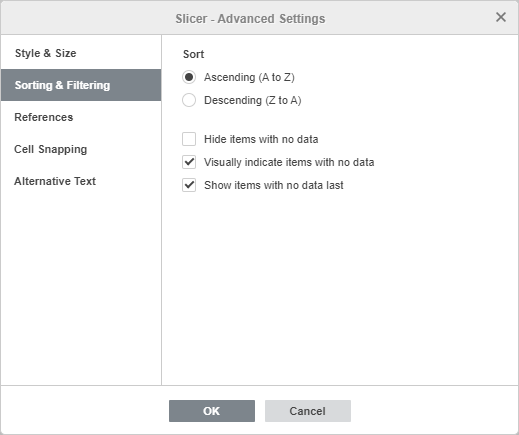
Kartica Sorting & Filtering sadrži sledeće parametre:
- Ascending (A to Z) koristi se za sortiranje podataka rastućim redosledom.
- Descending (Z to A) koristi se za sortiranje podataka opadajućim redosledom.
Opcija Hide items with no data omogućava sakrivanje stavki bez podataka iz segmentatora. Kada je ova opcija označena, opcije Visually indicate items with no data i Show items with no data last su onemogućene.
Kada opcija Hide items with no data nije označena, možete koristiti sledeće opcije:
- Opcija Visually indicate items with no data omogućava prikaz stavki bez podataka uz drugačije formatiranje.
- Opcija Show items with no data last omogućava prikaz stavki bez podataka na kraju liste.
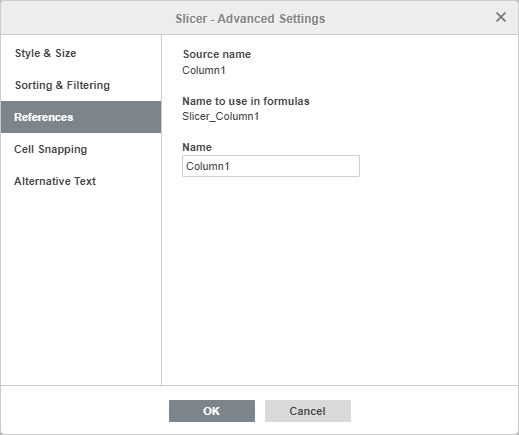
Kartica References sadrži sledeće parametre:
- Opcija Source name omogućava prikaz naziva polja koji odgovara zaglavlju kolone iz izvornog skupa podataka.
- Opcija Name to use in formulas omogućava prikaz naziva segmentatora koji se prikazuje u Name manager-u.
- Opcija Name omogućava postavljanje prilagođenog naziva segmentatora kako bi bio jasniji i smisleniji.
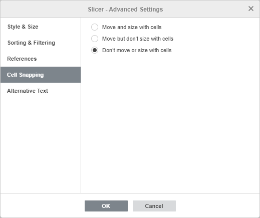
Kartica Cell Snapping sadrži sledeće parametre:
- Move and size with cells – omogućava da segmentator bude vezan za ćeliju iza njega. Ako se ćelija pomeri, segmentator će se pomeriti zajedno sa njom. Ako se promeni širina ili visina ćelije, promeniće se i veličina segmentatora.
- Move but don't size with cells – omogućava pomeranje segmentatora zajedno sa ćelijom, ali bez promene njegove veličine.
- Don't move or size with cells – sprečava pomeranje ili promenu veličine segmentatora kada se promeni pozicija ili veličina ćelije.
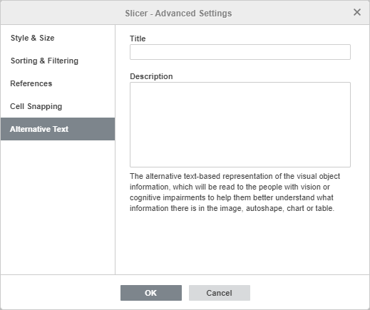
Kartica Alternative Text omogućava definisanje Title i Description koji će biti pročitani osobama sa oštećenim vidom ili kognitivnim poteškoćama kako bi bolje razumele koje informacije segmentator sadrži.
Brisanje segmentatora
Da biste obrisali segmentator,
- Izaberite segmentator klikom na njega.
- Pritisnite taster Delete.